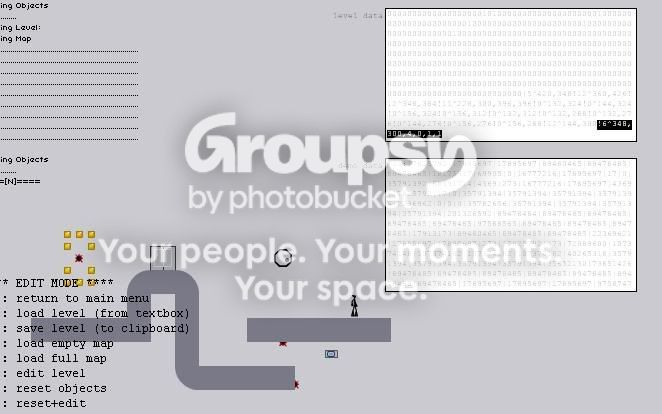
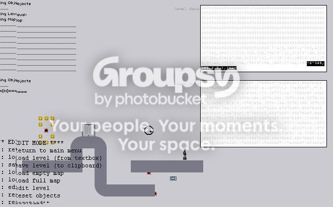

how do u make enemies not move. plz can some one tell me how to do this, i see other maps with the enemies just sitting there not moveing
They are caused by a 'NaN' (Not a Number).
You can add the NaN by going to the text box, locating the code of the drone you want to add it to, and add a NaN to the last digit of the code.
You can add the NaN by going to the text box, locating the code of the drone you want to add it to, and add a NaN to the last digit of the code.
How i know where the drone is in the text?
Delete the drone, and replace it, it should be at the end of the text box, highlight it as on some computers it's very hard to see.
depends on your colour settings
depends on your colour settings
"Sit, Ubu, sit. Good boy."
It is also able to keep enemies still by surrounding it with tiles or doors.
Do what Evil_Sire said that highlight the last number and type "NaN".
It's most likely redundant now, but you can have these anyway.
-
Make sure the drone is the last object you've placed, then bring up the level code:
The drone will be the very last string of code (Highlighted above).
Add 'nan' to the end of the code like so. Then, click outside the code box and load the map. The drone will now remain stationary.
-
Make sure the drone is the last object you've placed, then bring up the level code:

The drone will be the very last string of code (Highlighted above).

Add 'nan' to the end of the code like so. Then, click outside the code box and load the map. The drone will now remain stationary.
You MUST click outside the box though
You MUST click outside the box thoughYeah, that fact applies to all maps, any time. If you don't, when type L, you type an extra L into the level data when you load it, which could screw up certain objects. the last object you placed. Doing that multiple times for one map screws up multiple objects.
You MUST click outside the box thoughYeah, that fact applies to all maps, any time. If you don't, when type L, you type an extra L into the level data when you load it, which could screw up certain objects.
it only nan's the last object for me
it only nan's the last object for meYou MUST click outside the box thoughYeah, that fact applies to all maps, any time. If you don't, when type L, you type an extra L into the level data when you load it, which could screw up certain objects.
It depends on where you've left the cursor. So it could be anywhere from the start of your data to the end.
It doesn't do that to me normally, only when im naning or using teleporters  (which I NEVER do, I hate teleporters)
(which I NEVER do, I hate teleporters)
(which I NEVER do, I hate teleporters)